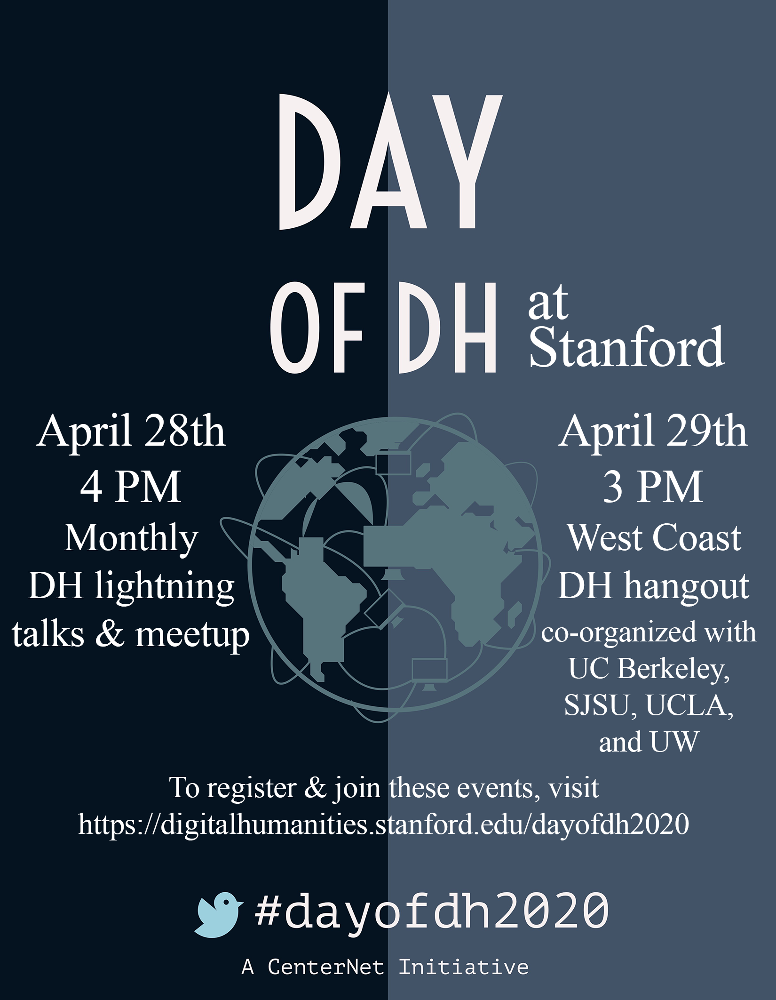

CESTA and CIDR are participating in Day of DH, an international celebration of the work that digital humanists do, sponsored by centerNet.
On Tuesday, April 28th at 4 PM Pacific, we'll have the virtual version of our monthly DH lighting talks and meetup. Please register for the Zoom call for the DH lighting talks and meetup here.
On Wednesday, April 29th at 3 PM Pacific, we'll be co-hosting with UC Berkeley, SJSU, and UCLA the West Coast DH hangout for Day of DH. Please register for the Zoom call for the West Coast DH hangout here.
Hope to see you (and any pets, kids, etc. who'd also like to join) there!
Day of DH coloring/art contest
Stanford's Textile Makerspace is proud to host a coloring and art contest for Day of DH 2020! Download one of the coloring sheets below and draw/color on it (digitally or physically), and post it with the #dayofdh2020 and #dayofdh2020art hashtags by April 30th! Contest judges are Quinn Dombrwski and Nichole Nomura from the Textile Makerspace, and Elli Mylonas from centerNet. Depending on the number of entries, we may have an adult & a child winner. Winners will get their image (or another design of their choosing) printed on fabric, sewn into something (cloth masks? something more fun? your choice!), and mailed to them anywhere in the world!
{kind=link}
{kind=link}